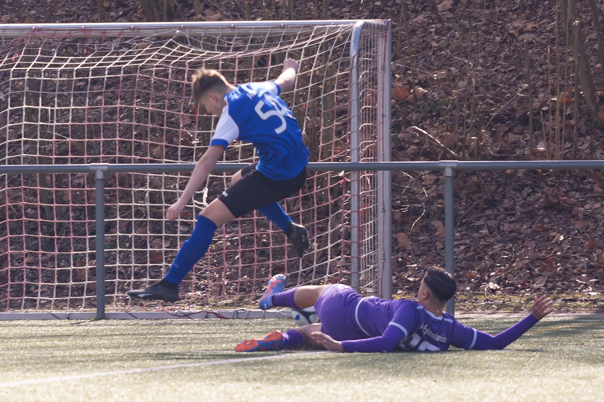
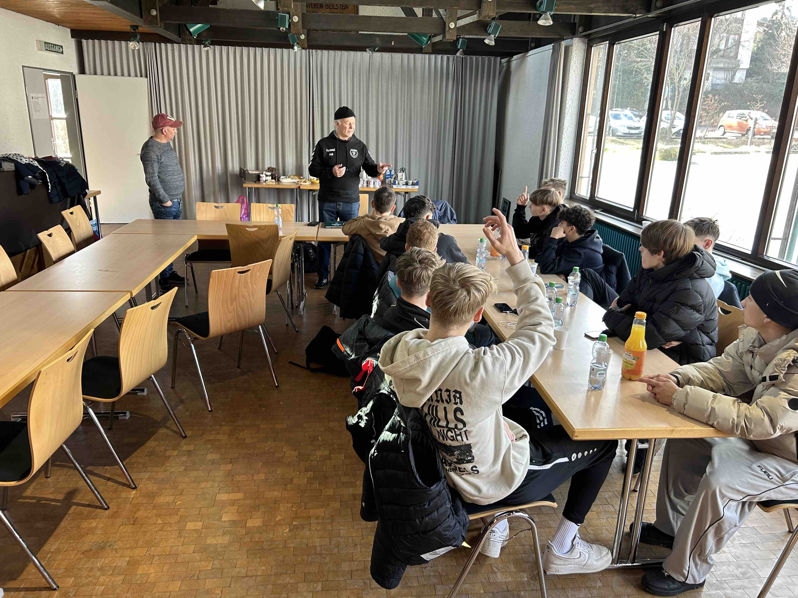

SGM-ABI B-Junioren
Abschluss der Saisonvorbereitung am 11.03.2023
 Samstag morgen 10.00 Uhr schönstes Fußballwetter in Beilstein. Die Spieler der beiden B Jugendteams trafen sich zum gemeinsamen Frühstück. Um 11.00 Uhr gab es dann von Henner Birke und Björn Mischiok für die Spieler der B1 einen Vortrag zum Schiedsrichterwesen. Die B2 spielte dann um 12.00 Uhr gegen den VFB Tamm B2. Das Runde muss ins eckige ist ein alter Fußballerspruch, leider beherzten unsere Spieler dies an diesem Tag nicht spielerisch die bessere Mannschaft ging man auch verdient mit 1:0 durch Joris in Führung. Allerdings trafen danach nur noch die Gäste und wir versemmelten unsere etlichen Chancen so dass am Ende ein 1:3 als Ergebnis feststand.
 Um 14.30 dann der Tausch die B2 Spieler gingen zum Vortrag über das Schiedsrichterwesen, und die B1 spielte gegen den SKV Eglosheim Endstand 7:2. Auf das relativ frühe 1:0 in der 5 Min folgte in der 21 Min. das 1:1. Die Ersten 15 Minuten dominierte man ganz klar spielerisch das Geschehen, und als man das spielerische vergaß, folgte dieser Ausgleich. In der 35 Min. gab es dann kurzfristig eine unschönen Szene die am Ende in drei Roten Karten und einer gelben Karte Ihr Ende fanden Der Schiedsrichter hatte das Geschehen vollkommen korrekt notiert, und auch alle Trainer waren hier äußerst besonnen. In der 38 Min erzielte Jaris das hochverdiente 2:1. In der Zeit von der 43 Min bis zur 56 Min folgten noch die Tore von Florian, Jaris, Fabian Kay zum 6:1 Julius konnte noch das 7:1 erzielen und mit dem Schlußpfiff erzielte der SKV noch einen Treffer zum 7:2.
 Nachdem nun viel geschafft wurde an diesem Tage gingen fast alle Spieler noch mit zum Bowling nach Auenstein ins #Beachbowoling wo der Tag dann seinen Ausklang gefunden hat.
Vielen Dank an Birgit und Andrea für die Hilfe beim Frühstück vielen Dank an Henner und Björn für eure tollen Vorträge. Und Danke an den ABI Förderverein fürs Bowling.
Und schließlich Danke an George, Kaan, Wolfgang als Trainerteam sowie vor allem an unsere Jungs die so toll in der Vorbereitung mitgezogen haben. Am Sonntag 19.3 beginnt nun die Runde in der Leistungsstaffel für die B1 und für die B2 eine Woche später in der Kreisstaffel. Belohnt euch in der Runde in dem Ihr weiterhin so intensiv im Training mitarbeitet.
Tolle Truppe, tolle Gemeinschaft
Nachdem nun viel geschafft wurde an diesem Tage gingen fast alle Spieler noch mit zum Bowling nach Auenstein ins #Beachbowoling wo der Tag dann seinen Ausklang gefunden hat.
Vielen Dank an Birgit und Andrea für die Hilfe beim Frühstück vielen Dank an Henner und Björn für eure tollen Vorträge. Und Danke an den ABI Förderverein fürs Bowling.
Und schließlich Danke an George, Kaan, Wolfgang als Trainerteam sowie vor allem an unsere Jungs die so toll in der Vorbereitung mitgezogen haben. Am Sonntag 19.3 beginnt nun die Runde in der Leistungsstaffel für die B1 und für die B2 eine Woche später in der Kreisstaffel. Belohnt euch in der Runde in dem Ihr weiterhin so intensiv im Training mitarbeitet.
Tolle Truppe, tolle Gemeinschaft